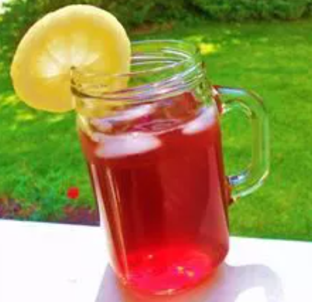

Overview
After tasting Boston Iced Tea, I just had to try and concoct my own. Delicious and refreshing! You can also serve with a slice of fresh orange./p>
Try this homemade Boston Iced Tea recipe today!
Homemade Boston Iced Tea Ingredients
These are the ingredients you'll need to make this top-rated homemade Boston Iced Tea recipe:
- 1 gallon water
- 1 cup white sugar
- 15 tea bags
- 1 (12 fluid ounce) can frozen cranberry juice concentrate
How to Make Homemade Boston Iced Tea
Making homemade Boston Iced Tea much easier than it looks. You'll find the full, step-by-step recipe below:
- Put water in large pot, and heat on high until boiling.
- Add sugar and stir until dissolved.
- Add teabags and let steep until desired strength is acquired.
- Stir in cranberry juice concentrate, and allow to cool.